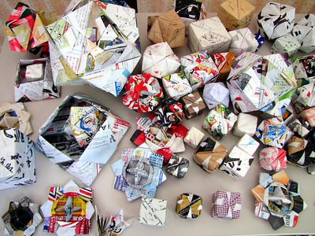
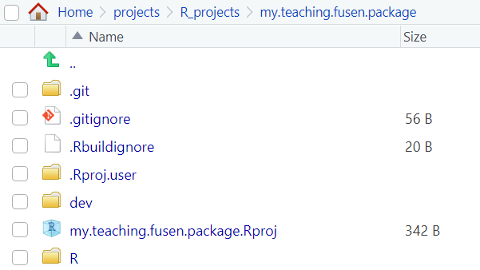
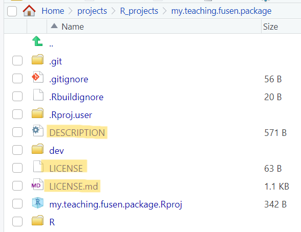
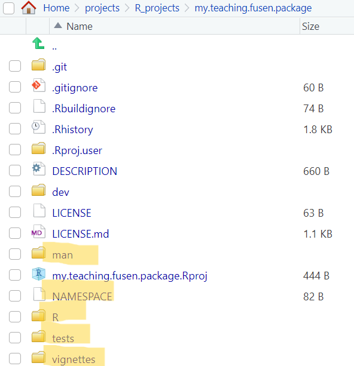

Building an R package using {fusen}
Originally posted on Imperial’s Research Software Engineering team blog.

Writing your first full R package can feel overwhelming, but {fusen} can help support at this stage (Even if you are an experienced developer, there is something for you too in this blog. Please read on!). “Fusen” is a type of Japanese origami in which a flat piece of paper, when folded in a specific way and inflated, turns into a nice paper box/balloon. Similarly, the {fusen} package inflates a flat .Rmd template (which is filled in a specific way) and returns a nice package. In this blog post, I am sharing my experience of exploring {fusen} for the first time.
Pre-requisites
- RStudio installed
- Connect RStudio to Git and GitHub (Optional, but recommended)
Installation and initial setup
The CRAN released version of {fusen} can be installed using:
install.packages("fusen")Then we will have to create a new project in RStudio by following: File > New Project > New directory > Package using {fusen}. This will open a Create Package using {fusen} wizard. Specify the directory name and choose a {fusen} template to work with. If you want to see how {fusen} works then select the teaching template (recommended when using for the first time), otherwise select the full template. You can also provide a name for the flat file that is to be generated. Check Create a git repository, Open in new session and finally click on Create Project to create the initial structure.
Convert a .Rmd file into a package
Following the installation and initial setup mentioned above (Select the teaching template and default name (first) for the flat filename. For the directory name, I am using my.teaching.fusen.package) will open a new RStudio session with an initial structure as seen in the image below:

Since a new RStudio session is open, you will have to install {fusen} again (using install.packages("fusen")) in this session to be able to use its functionalities in the new session. Navigate to dev/flat_first.Rmd flat file and observe the different chunks present in it. The chunks in the flat file help to set up your package:
description: In this chunk, you will add metadata about your package (for example, package author, package license, etc.).development: This chunk can be used to write code for development purposes (we will not be using this for now).function: In this chunk, you will write code for a function in your package.examples: Here you would add examples of using the function which will become a part of the@examplesfield in the corresponding vignette.tests: In this chunk, you can add unit tests for your function.
Add the appropriate information (title, description, author(s), email(s), license) in the description chunk and run it. It will generate the DESCRIPTION and LICENSE files for your package.

description chunk in the flat file is runThere is a default function chunk, named add_one (along with its examples and tests chunk) present in the flat file. This flat file has the minimal structure required to be transformed into a package using the function fusen::inflate():
fusen::inflate(
flat_file = "dev/flat_first.Rmd",
vignette_name = "Get started",
check = TRUE
)After running the above function, if you explore the Files pane on RStudio, you will notice that it looks very similar to a package structure. Notice the new directories and files that have been generated:
Rdirectory: It has theadd_one.Rfunction file, which is generated fromfunction-add_onechunk of the flat file.mandirectory: It has theadd_one.Rdfile generated from theroxygen2comments in thefunction-add_onechunk.testsdirectory: It has thetestthat/test-add_one.Rgenerated by thetests-add_onechunk of the the flat file.vignettesdirectory: It has theget-started.Rmdfile which is generated by thefusen::inflate()command.NAMESPACEfile: It exports theadd_onefunction (provided the@exportfield is mentioned in theroxygen2comments in thefunction-add_onechunk of the flat file).

At this stage, we have a proper R package structure - if you want to you can clean up any fusen related files and tags from it and can also publish it on GitHub!
You can also add new family of functions to your package using new flat template files. I will add two more functions (squared and is_even) using:
fusen::add_flat_template(
template = "additional",
dev_dir = "dev",
flat_name = "squared", # and later on replace this with "is_even"
)This will create a new flat file template named dev/flat_squared.Rmd (and dev/flat_is_even.Rmd when the corresponding flat_name is used) with the various (empty) chunks that can be populated. The chunks that I used for the respective flat files are given below:
“Square of a number” :::{.callout-note} function chunk to square a number:
````default
```r
#' Compute squared value
#'
#' @param value A numeric value
#'
#' @return Numeric.
#' @export
squared <- function(value) {
result <- value^2
return(result)
}
```
````
`examples` chunk to square a number:
````default
```r
squared(10)
squared(73)
```
````
`tests` chunk to test the function:
````default
```r
test_that("squared works", {
expect_equal(squared(10), 100)
expect_equal(squared(73), 5329)
})
```
````:::
“Is a number even?” :::{.callout-note} function chunk to check if a number is even:
````default
```r
#' Check if a value is even
#'
#' @param value A numeric value
#'
#' @return Logical. TRUE if value is even, FALSE otherwise
#' @export
#'
is_even <- function(value) {
result <- value %% 2 == 0
return(result)
}
```
````
`examples` chunk to check if a number is even:
````default
```r
is_even(20)
is_even(47)
```
````
`tests` chunk to test the function:
````default
```r
test_that("is_even works", {
expect_true(is_even(20))
expect_false(is_even(47))
})
```
````:::
Inflate each of the two new flat files individually using:
fusen::inflate(
flat_file = "dev/flat_squared.Rmd", # and "dev/flat_is_even.Rmd"
vignette_name = "Square of a number", # and "Check if even number"
check = TRUE
)This will update the package to include the two new functions, their unit tests, corresponding vignettes and .Rd files, and the NAMESPACE (if the functions are exported) in the appropriate locations.
Takeaways
- {fusen} ensures that you are writing the documentation as well as any associated tests at the same time as writing your code (the best research software engineering practice to begin with!).
- It is not only useful for first time R package developers, but also for more experienced developers, in the sense that they don’t have to switch between R files, tests files, and vignettes while they are prototyping their functions.
- Since all the related chunks are located in the same flat file, it avoids the risks of forgetting any crucial step.
- If you retain the flat file(s), then it is also easier to review the code, because everything related to a particular function is available in the same file.
- It is possible to switch from a package developed with {fusen} to a classical package and continue building the package using the classical approach.